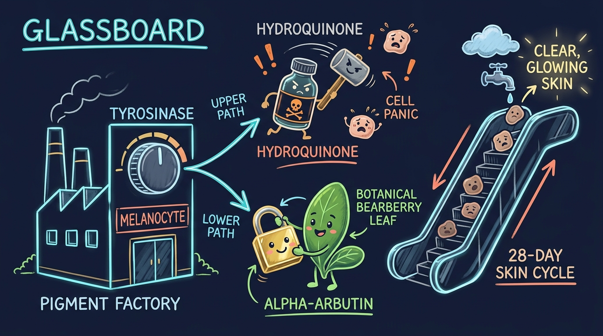

Alpha-Arbutin vs. Hydroquinone: How Tyrosinase Blockers Safely Fade Dark Spots
The Skin Paint Factory & The 28-Day Escalator
Comparing destructive cell poisoning against safe enzyme lock inhibition.

Hydroquinone Route
- 1. Cytotoxic chemical enters pigment factory.
- 2. Poisons and kills melanocyte cells.
- 3. High risk of severe rebound dark spots & ochronosis.
Alpha-Arbutin Route
- 1. Clean bearberry botanical mimics tyrosine.
- 2. Blocks tyrosinase enzyme lock safely (70% slow).
- 3. Old pigment rides the 28-day escalator off the skin.
Have you ever noticed a dark mark on your face after an acne breakout or a sunny day at the beach? Dermatologists call this hyperpigmentation.
To clear dark marks, people often hear about two main ingredients: Hydroquinone and Alpha-Arbutin. One ingredient is an old chemical that damages your cells. The other ingredient is a clean plant molecule that works with your skin.
This clinical study explains how dark spots form, why cells make pigment, and how to fade marks safely.
1. The Paint Factory Inside Your Skin
Your skin contains special cells called melanocytes. Think of each melanocyte as a tiny paint factory.
When ultraviolet (UV) sunlight hits your skin, the factory starts working. The cells make a dark pigment called melanin. Melanin acts like a tiny umbrella over each cell nucleus. This dark umbrella protects your DNA from sun damage.
Sometimes, the factory panics. After sun exposure, hormonal changes, or an acne pimple, the factory prints too much dark paint in one spot. The extra melanin clumps together. This clumping creates a visible dark spot on the skin surface.
2. The Key to the Machine: Tyrosinase
Every machine in a factory needs an on-switch. In your pigment cells, that switch is an enzyme called tyrosinase.
An enzyme is a protein that speeds up a chemical reaction. Tyrosinase takes a clear amino acid called tyrosine and converts it into dark melanin.
If tyrosinase is active, the cell prints dark pigment. If tyrosinase is inactive, the cell stops making dark pigment. Therefore, all dark spot treatments try to stop this enzyme.
3. The Dangerous Method: Hydroquinone
For many years, doctors prescribed Hydroquinone. Hydroquinone works fast, but it works through destruction.
Hydroquinone is cytotoxic. This means it is toxic to living cells. Instead of simply turning down the machine, hydroquinone damages the pigment factory. It poisons the melanocyte cells.
This toxic process causes severe side effects:
- Severe Redness and Peeling: Hydroquinone strips the outer lipid barrier of the skin.
- Rebound Hyperpigmentation: When you stop using hydroquinone, the surviving cells panic. They produce even more dark pigment than before.
- Exogenous Ochronosis: Long-term hydroquinone use can cause permanent, irreversible blue-black stains beneath the skin.
Because of these dangers, the European Union, Japan, and Australia have banned hydroquinone from over-the-counter sales.
4. The Smart Method: Alpha-Arbutin
Scientists searched for a molecule that stops tyrosinase without killing cells. They found the solution in the bearberry plant: Alpha-Arbutin.
Alpha-Arbutin is a smart molecule. Its shape looks almost identical to tyrosine (the raw material that tyrosinase uses to make pigment).
Here is how Alpha-Arbutin works:
- Competitive Inhibition: Alpha-Arbutin slides into the enzyme pocket before tyrosine can enter. It fits into the lock, but does not turn the key.
- Reversible Slowdown: It holds the lock closed. The enzyme cannot make dark pigment.
- Zero Cell Damage: Alpha-Arbutin does not destroy or poison the cell. The cell stays healthy and alive.
Clinical trials show that Alpha-Arbutin reduces tyrosinase activity by up to 70%. It creates an even skin tone without redness, irritation, or cell death.
| Biological Metric | Alpha-Arbutin (Clean Botanical) | Hydroquinone (Synthetic Bleach) |
|---|---|---|
| Mode of Action | Enzyme Lock (Reversible) | Cell Toxicity (Destructive) |
| Cell Survival | 100% Non-Cytotoxic | Kills or damages melanocytes |
| Barrier Disruption | Zero (Moisture barrier stays intact) | High (Redness, peeling, dryness) |
| Rebound Risk | Extremely Low | High (Rebound darkening common) |
| Global Safety Status | Approved worldwide for daily OTC use | Banned in EU, UK, and Japan for OTC use |
5. The 28-Day Escalator: How Spots Leave Your Skin
Why does a dark spot not vanish overnight? The answer lies in how human skin renews itself.
Your outer skin (the epidermis) works like a slow escalator. New cells are born at the bottom layer (the basal layer). Over 28 to 40 days, these cells move upward toward the surface. When they reach the top, they die, dry out, and wash away when you shower.
When you apply Alpha-Arbutin, it stops new dark paint at the bottom layer. The existing dark cells on top do not change color immediately. Instead, you must wait for the escalator to finish its ride.
As old, stained cells reach the top and shed off, clean cells take their place. Within 4 to 8 weeks, the dark mark fades naturally.
6. The Multi-Active Synergistic Approach
Alpha-Arbutin works best when combined with other safe brightening agents:
- Niacinamide (Vitamin B3): Stops melanin packets from transferring into surface skin cells.
- Magnesium Ascorbyl Phosphate (Vitamin C): Lightens existing pigment clusters through natural oxidation reduction.
- Licorice Root Extract (Glabridin): Calms redness and provides a secondary tyrosinase block.
This 6-tier botanical combination is the exact clinical formula found inside Illuminatural 6i®. By attacking pigment from six biological angles, it clears discoloration without hydroquinone risks.
7. Frequently Asked Questions
Alpha-Arbutin works through competitive enzyme inhibition. It blocks tyrosinase without killing or damaging pigment cells. In contrast, Hydroquinone is cytotoxic, meaning it poisons melanocyte cells and can cause severe redness, peeling, rebound hyperpigmentation, or permanent ochronosis.
Because Alpha-Arbutin blocks new pigment production at the basal layer of the skin, existing surface marks fade as old cells shed naturally. This skin turnover cycle takes 28 to 40 days. Most clinical trials show visible lightening within 4 to 8 weeks of daily application.
Experience Botanical Tyrosinase Defense
Formulated inside Illuminatural 6i® with Alpha-Arbutin and a 100% risk-free 90-day money-back guarantee.
Visit Official Illuminatural 6i Store